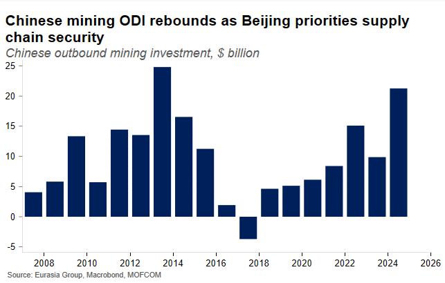
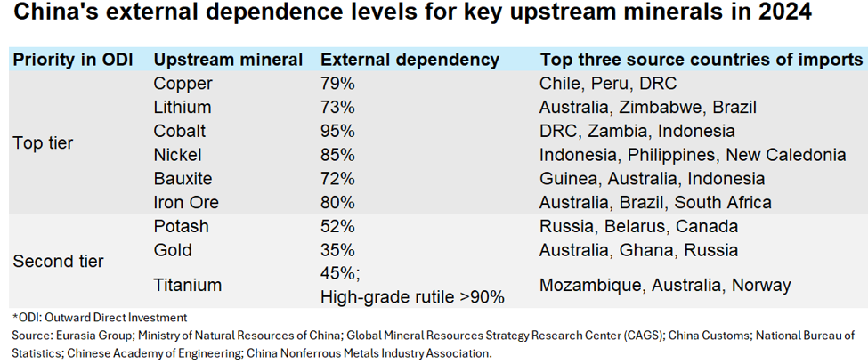
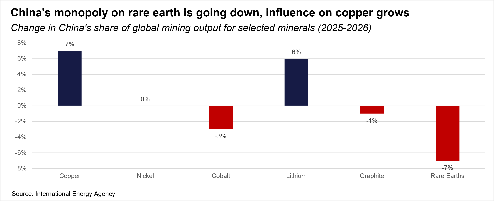
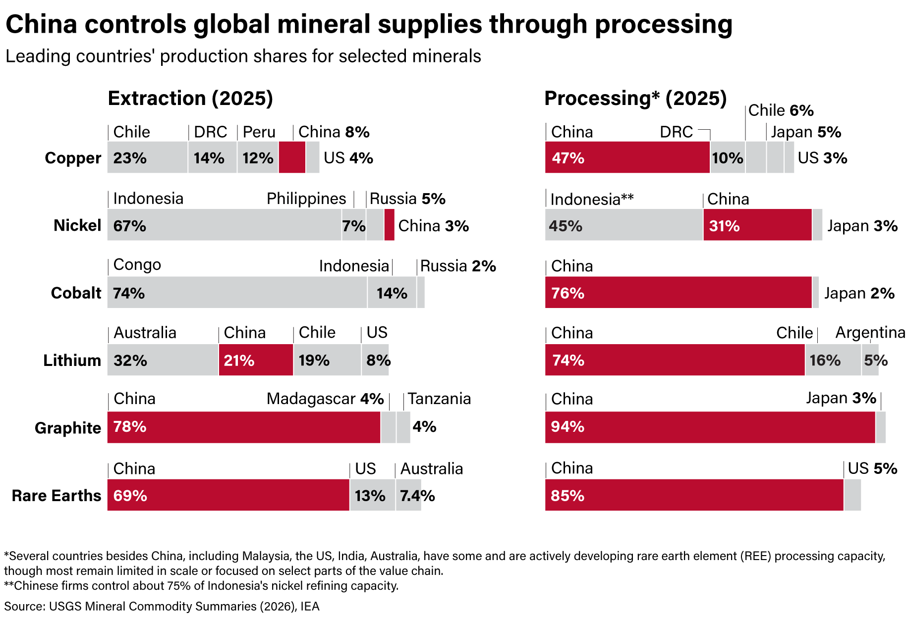

|
 |
|||
|
||||
|
||
This is an AI-generated summary based on the call transcript. A full transcript and audio of this call are available. You can access other Eurasia Group conference calls through a personalized link for select podcast readers here. Speakers:
China's New State-Coordinated Investment Model Beijing is ending a fragmented approach to overseas mining investment, in which Chinese companies themselves largely directed state-backed investment, but often undercut each other in bidding for major assets, especially in Africa and Southeast Asia. China has recently established a full national team to direct this investment, with the National Development and Reform Commission (NDRC), China's top planning body, overseeing final approval. Most notably the State-owned Assets Supervision and Administration Commission has established a new outbound investment department to monitor investments abroad by central SOEs, and Guangyan was established in 2024 as the leading central state-owned enterprise platform to coordinate different SOE overseas acquisitions and take minority stakes in deals. China’s total outbound direct investment (ODI) approvals have slowed under new national security regulations issued in July, but mining remains a strategic priority — and decisions are made on strategic, not commercial, grounds. The pending NDRC review of Zijin Mining's acquisition of Allied Gold's African assets (including assets in Mali) illustrates both the high risk appetite of Chinese firms and Beijing's continued interest in high-quality overseas mines even in challenging security conditions. Scale of Planned Spending China's mining ODI during the 14th Five Year Plan (the past five years) totaled approximately US$60 billion. Based on conversations with Chinese regulators and state-owned enterprises, the 15th Five Year Plan period is expected to see at least US$120 billion — a doubling. This is roughly comparable in total magnitude to US investment, but the composition differs sharply: Chinese investment is mostly state-backed and countercyclical, prioritizing long-term asset accumulation over short-term profitability.  Of the US$120 billion, the rough allocation by region is approximately 70bn Africa, 30bn Latin America, and 20bn Asia — with Latin America's share having declined given its status as the Western Hemisphere and associated geopolitical sensitivity. Where China Sees Vulnerability China's political leaders are concerned the country’s upstream supply for key minerals — including those critical to AI, semiconductors, space technology, and renewables — is too heavily concentrated in a small number of countries. The 15th Five Year Plan centers on high-tech industries, and Beijing's goal is to diversify upstream sourcing across the Global South over the next five to ten years.  Chinese regulators have produced a geopolitical stance assessment categorizing mining countries as pro-US, non-aligned (mostly middle powers), or pro-China, with the latter group receiving priority in ODI approvals. Beijing is also concerned about progress its rivals, especially the US, are making at their own mining investments to build out alternatives. Beijing's rare earth dominance declined modestly in 2025, according to new numbers released by the International Energy Agency (IEA) 16 July. China's share of global rare earths refined output is now approximately 85%, down from 91% in just one year, largely from US-led efforts that began roughly a decade ago and accelerated in 2025. However, China has gained share in copper and lithium, actively countering Western diversification efforts.  The Processing Chokepoint China is willing to invest in upstream assets and surrounding infrastructure (ports, roads, railways) in partner countries, and has begun transferring lower-level processing technology upon request. However, it is deliberately retaining high-end refining and processing capacity at home. This is the core strategic chokepoint Beijing intends to preserve.  Producer Country Strategies: Brazil and Zambia Examples Among emerging producers, Brazil and Zambia are analytically notable for moving beyond flat tax incentives toward quasi-price stabilization mechanisms:
Countries combining offtake agreements, price stabilization mechanisms, and implementation capacity will be relative winners — not just during the current boom but through the coming bust. The IEA's latest data suggests rare earth investment is high enough that some markets could see glut conditions in the coming years. US Strategy: Progress and Limits The US has deployed financing through DFC, EXIM, and the Pentagon to back companies including USA Rare Earth, MP Materials, and Energy Fuels. A notable example: US $2.1 billion in federal financing went to USA Rare Earth, which acquired the Serra Verde rare earth project in Brazil — an ionic clay deposit with significant heavy rare earth potential and a production scale-up target as early as 2027, though environmental community opposition risks delays. The US secured an offtake agreement for the rare earth supply from that project. Energy Fuels recently acquired the German company VACUUMSCHMELZE (referred to in the call as "VAC"), which brings respected processing and magnet-making know-how into a US-aligned supply chain. However, skepticism persists in the industry about whether newer, less-experienced US-backed companies can scale quickly in refining and magnet-making. The US-Brazil relationship remains strained; a trade deal has not materialized, and Brazilian political leaders were unable to block the Serra Verde acquisition. The episode has prompted Brasilia to consider mechanisms to prevent similar outcomes. On price floors and Project Vault, international allies have shown limited enthusiasm and are increasingly working through the G7; meaningful progress is more likely on a months-long timeline than in weeks. Key Watch Items
What Clients Are Asking Chinese investment plans for Africa: Clients asked how large China's Africa-focused mining spending will be. The rough allocation from speakers is approximately 70bn of the planned US$120 billion in mining ODI going to Africa, making it the primary target. Brazil-China relationship and whether US actions are pushing Brazil toward Beijing: Clients asked whether the USA Rare Earth acquisition of Serra Verde reinforces Chinese-Brazilian economic ties. Speakers confirmed this is a live risk — Brasilia was unable to block the deal and is now considering policy mechanisms to prevent similar outcomes — but stopped short of predicting a definitive tilt toward China. Chinese visa restrictions and talent mobility: Clients asked about Chinese visa denials for foreign executives and the movement of Chinese mining talent abroad. Speakers noted visa issues are concentrated among companies and countries actively engaging with Taiwan or imposing technology restrictions on China; friendly countries including Germany, France, and Spain have not faced comparable problems. Which producer countries are best positioned: Clients sought a ranking of upstart producers. Speakers pointed to Brazil and Zambia as promising, specifically for their price stabilization mechanisms and implementation capacity. Argentina was noted for openness to investment but weaker policy architecture. Angola was flagged as a laggard. Please note that while this AI-generated summary has been checked for accuracy against the source material, it may not capture every nuance or qualifier from the discussion. The full transcript or audio should be consulted for complete context. |